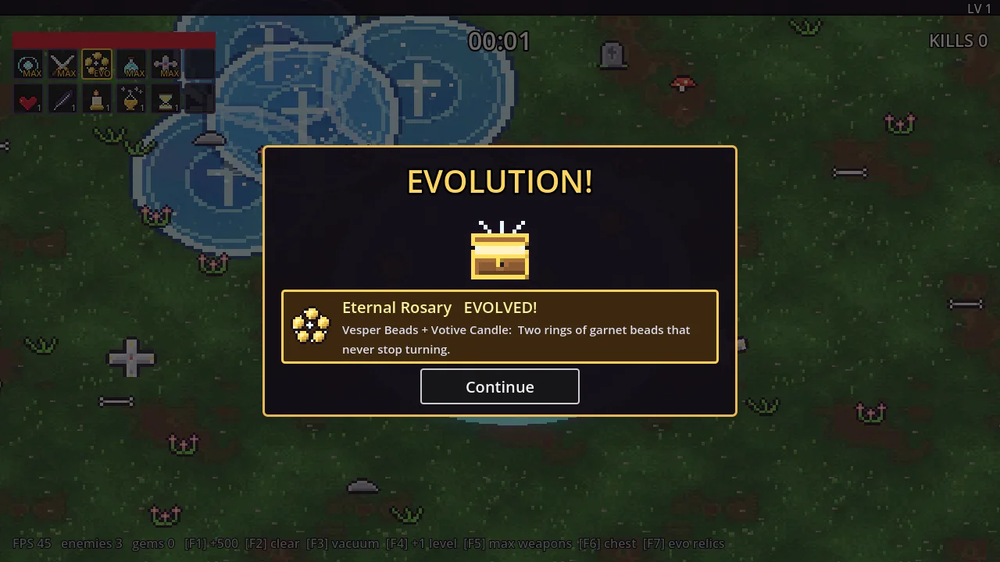
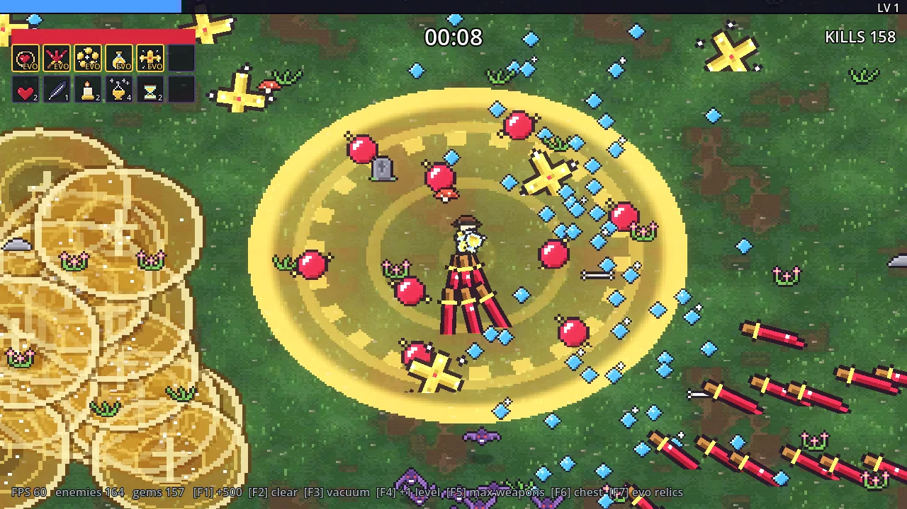

Pasif, Evolusi dan Peti
Survivors-like hidup dari kombinasi. Fase 4 menambah 7 relik sehingga setiap stat gameplay punya relik, resep evolusi (senjata level maks + relik tertentu = senjata baru), peti yang memberi hadiah, dan baris ikon loadout di HUD.


13 relik, satu kelas
Relik adalah PassiveData: daftar StatModifier yang diterapkan sekali lagi setiap naik level. Ke-13 relik menutupi semua stat gameplay: might, area, cooldown, amount, projectile speed, duration, move speed, max HP, recovery, armor, luck, magnet, crit.
1class_name PassiveData
2extends Resource
3## A passive relic: every level applies `modifiers` once more.
4## Evolution requirements live in EvolutionData (data/evolutions/).
5
6@export var id: StringName
7@export var display_name := ""
8## Flavour + effect, shown on the card that offers the relic for the first time.
9## Keep it to one line: level-up cards have a fixed height.
10@export_multiline var description := ""
11@export var icon: Texture2D
12@export var max_level := 5
13@export var modifiers: Array[StatModifier] = []
14
15
16## Text for the card offering `next_level`: level 1 = description, later
17## levels = what one level adds and the total it reaches.
18func level_up_text(next_level: int) -> String:
19 if next_level <= 1:
20 return description
21 var parts: PackedStringArray = []
22 for m in modifiers:
23 parts.append("%s (total %s)" % [m.describe(1), m.describe(next_level, false)])
24 return ", ".join(parts)Teks kartu ditulis manusia hanya untuk level 1 (satu baris, kartu tingginya tetap). Level 2 ke atas dibuat otomatis dari angka modifier, misalnya "+10% damage (total +30%)". Itu mencegah teks dan angka tidak cocok, masalah klasik saat menyeimbangkan game.
109## "+10% damage", "+1 projectiles", "+0.2 HP/s recovery" (no label: "+10%").
110static func describe(id: int, flat: float, percent: float, with_label: bool = true) -> String:
111 var label: String = (" " + LABELS[id]) if with_label else ""
112 var parts: PackedStringArray = []
113 if flat != 0.0:
114 if FLAT_AS_PERCENT.has(id):
115 parts.append("%+d%%%s" % [roundi(flat * 100.0), label])
116 elif is_equal_approx(flat, roundf(flat)):
117 parts.append("%+d%s" % [roundi(flat), label])
118 else:
119 parts.append("%+.1f%s" % [flat, label])
120 if percent != 0.0:
121 parts.append("%+d%%%s" % [roundi(percent * 100.0), label])
122 return ", ".join(parts)Hunter's Eye memberi dua modifier (crit chance + crit damage); crit dihitung di Weapon.roll_damage() dan bendera last_crit diteruskan ke damage_enemy untuk angka damage kuning di Fase 6.
Evolusi sebagai resep data
1class_name EvolutionData
2extends Resource
3## Recipe: `base` at its max level + `passive` at `passive_level` or higher
4## turns into `result` when a chest is opened. The evolved weapon takes the
5## base weapon's slot. Listed in UpgradePool.evolutions.
6
7@export var base: WeaponData
8@export var passive: PassiveData
9@export var passive_level := 1
10@export var result: WeaponData
11
12
13func is_ready(player: Player) -> bool:
14 var w := player.weapon_for(base)
15 return w != null and w.level >= base.max_level \
16 and player.passives.get(passive, 0) >= passive_level \
17 and player.weapon_for(result) == null 1[gd_resource type="Resource" script_class="EvolutionData" format=3]
2
3[ext_resource type="Script" path="res://passives/evolution_data.gd" id="1_script"]
4[ext_resource type="Resource" path="res://data/weapons/silverthorn_knives.tres" id="2_base"]
5[ext_resource type="Resource" path="res://data/passives/raven_feather.tres" id="3_passive"]
6[ext_resource type="Resource" path="res://data/weapons/thornstorm.tres" id="4_result"]
7
8[resource]
9script = ExtResource("1_script")
10base = ExtResource("2_base")
11passive = ExtResource("3_passive")
12passive_level = 1
13result = ExtResource("4_result")Yang menarik adalah bagaimana senjata evolusi dibuat tanpa skrip baru. Thornstorm adalah varian scene dari pisau: skrip yang sama, nilai @export berbeda.
1[gd_scene format=3]
2
3[ext_resource type="Script" path="res://weapons/knives/knives_weapon.gd" id="1_script"]
4
5[node name="Thornstorm" type="Node3D"]
6script = ExtResource("1_script")
7sprite_row = 4
8sprite_scale = 1.15
9burst_interval = 0.05
10fan = 3
11fan_degrees = 13.0fan = 3: setiap lemparan jadi kipas 3 pisau; sprite_row = 4: baris duri merah di sheet proyektil. Kemampuan baru ditambahkan ke skrip dasar sebagai export dengan default "mati" (fan := 1), lalu varian menyalakannya. Daftar lengkapnya: aura heal_per_pulse, knives fan, orbit rings/continuous, vial splash_count/drift_speed, cross endless/burst_count.
- Klik kanan
weapons/knives/knives_weapon.tscn→ , atau duplikat file .tscn-nya. Ubah nama root jadiThornstorm, set export di Inspector, simpanthornstorm.tscn. - Buat
data/weapons/thornstorm.tres(WeaponData,is_evolution = true,scene= thornstorm.tscn, tanpalevels→max_level = 1). Jangan masukkan keUpgradePool.weapons: evolusi hanya dari peti. - Buat
data/evolutions/thornstorm.tres(EvolutionData: base, passive, result) dan masukkan keUpgradePool.evolutions.
Mengganti senjata di slot yang sama
65## Replaces evo.base with evo.result in the same slot (see EvolutionData).
66func evolve(evo: EvolutionData) -> Weapon:
67 var old := weapon_for(evo.base)
68 if old == null:
69 return null
70 var w := _make_weapon(evo.result)
71 w.damage_dealt = old.damage_dealt # the run summary counts the whole line
72 weapons[weapons.find(old)] = w
73 weapons_root.move_child(w, old.get_index())
74 weapon_replaced.emit(old, w)
75 old.queue_free()
76 return wAda jebakan: proyektil Silverthorn yang masih terbang menyimpan referensi source ke node senjata lama, yang akan di-queue_free. Proyektil itu nanti memanggil source.roll_damage() pada objek yang sudah dibebaskan → crash. Solusinya sinyal weapon_replaced(old, new), yang Game teruskan ke ProjectileField:
292## Live projectiles of `old` now belong to `new` (weapon evolved, old is freed).
293func replace_source(old: Weapon, new: Weapon) -> void:
294 for i in count:
295 if source[i] == old:
296 source[i] = newDi Game._ready: player.weapon_replaced.connect(projectiles.replace_source). Satu baris, dan referensi menggantung hilang.
Peti
Peti adalah pickup di dunia (PickupField, packed array + MultiMesh lagi). Saat diambil, Game menambah pending_chests, dan di akhir frame membuka layar peti dengan pola antrian yang sama seperti level up. Isi peti diundi oleh Game, langsung diterapkan, lalu ditampilkan oleh ChestScreen yang hanya view:
474## Rolls and applies one chest's rewards, then shows them.
475func _open_chest() -> void:
476 var rewards: Array[UpgradeOffer] = []
477 for k in chest_item_count():
478 var offer := upgrade_pool.chest_reward(player, banished)
479 if offer == null:
480 break
481 offer.apply(player)
482 rewards.append(offer)
483 if rewards.is_empty():
484 var heal := UpgradeOffer.for_heal(upgrade_pool.heal_icon)
485 heal.apply(player)
486 rewards.append(heal)
487 hud.refresh(self) # the tree is paused: show the new loadout behind the screen
488 Audio.play_sfx(&"chest_open")
489 chest_screen.present(rewards)
490
491
492func chest_item_count() -> int:
493 var luck := player.stats.value(Stats.Id.LUCK)
494 var r := randf()
495 if r < chest_five_chance * luck:
496 return 5
497 if r < (chest_five_chance + chest_three_chance) * luck:
498 return 3
499 return 1
500
501
502func _on_chest_closed() -> void:
503 pending_chests -= 1
504 if pending_chests > 0:
505 _open_chest()
506 else:
507 chest_screen.close()
508 get_tree().paused = false32## One chest item, or null when nothing can be evolved or levelled.
33## The caller applies it before asking for the next one.
34func chest_reward(player: Player, banished: Array[Resource]) -> UpgradeOffer:
35 var evos := evolutions.duplicate()
36 evos.shuffle()
37 for evo: EvolutionData in evos:
38 if evo.is_ready(player):
39 return UpgradeOffer.for_evolution(evo)
40 var pool := owned_upgrades(player, banished)
41 return null if pool.is_empty() else pool.pick_random()Urutan prioritas: evolusi yang siap lebih dulu (diacak supaya tidak selalu evolusi yang sama), kalau tidak ada maka level acak dari item yang dimiliki, kalau semua maks maka "Hearty Meal" (heal 30%). UpgradePool.owns_line() mencegah Silverthorn ditawarkan lagi setelah pemain memegang Thornstorm.
Loadout di HUD
12 slot ikon dibuat dari kode di Hud._ready, lalu diisi tiap frame dari player.weapons dan player.passives. Membuat node UI dari kode berguna saat jumlahnya ditentukan konstanta (Player.MAX_WEAPONS), bukan oleh desainer.
126func _refresh_loadout(p: Player) -> void:
127 for i in _weapon_slots.size():
128 if i < p.weapons.size():
129 var w := p.weapons[i]
130 _set_slot(_weapon_slots[i], w.data.icon, w.level, w.data.max_level, w.data.is_evolution)
131 else:
132 _set_slot(_weapon_slots[i], null, 0, 0, false)
133 var i := 0
134 for passive in p.passives:
135 if i >= _passive_slots.size():
136 break
137 _set_slot(_passive_slots[i], passive.icon, p.passives[passive], passive.max_level, false)
138 i += 1
139 while i < _passive_slots.size():
140 _set_slot(_passive_slots[i], null, 0, 0, false)
141 i += 1
142
143
144## Pointers at the screen edge toward the boss and chests that are off screen.Versi Fase 7 hanya mengganti variasi tema dan pips saat nilainya berubah. Mengubah theme_type_variation setiap frame memicu perhitungan ulang gaya; di 1100 musuh optimasi kecil itu menghemat sekitar 1% FPS.
- F5 (semua senjata maks) lalu F7 (beri relik pasangan evolusi), lalu F6 beberapa kali (jatuhkan peti). Setiap peti berisi satu evolusi sampai kelimanya selesai.
- Slot evolusi di HUD berbingkai emas. Seraph's Halo menyembuhkan saat pulsa mengenai musuh.
- Pisau yang sedang terbang saat Thornstorm muncul tetap memberi damage tanpa error.
- "Attempt to call function on a previously freed instance". Ada yang masih memegang node senjata lama. Cari semua tempat yang menyimpan
Weapon(proyektil, zona, statistik) dan pindahkan ke yang baru. - Evolusi ditawarkan di level up. WeaponData evolusi masuk ke
UpgradePool.weapons. Evolusi hanya dievolutions. - Varian scene tidak berubah. Export diubah di skrip, bukan di node varian. Nilai di .tscn varian menimpa default skrip.
- Buat evolusi keenam untuk Holy Aura dengan relik lain (mis. Lodestone) sebagai varian
aura_weapon.tscndengan radius dua kali lipat dan warna lain lewat parameter shader. Tanpa skrip baru. - Ubah
chest_five_chancedi Inspector Main ke 1,0 dan buka peti. Apa yang terjadi saat item yang bisa diupgrade habis di tengah undian lima item?